Explain the difference between alarms and events in Application Server
Describe the five types of alarms and configure each
Understand plant state-based alarming and alarm modes (Enable/Silence/Disable)
Configure alarm severities, priorities, and aggregation
Use alarm shelving to temporarily suppress alarms
Understand alarm historization to AVEVA Historian
23.1 What is an Alarm / Event?
Page 7-3
The alarm and event capabilities in Application Server automate the detection, notification, historization, and viewing of both application (process) alarms/events and system/software alarms/events.
Event: A general occurrence of a condition at a specific point in time. Events represent state changes that are not inherently abnormal. The system detects events, stores them historically, and reports them to clients.
Alarm: A special, prioritized type of event that represents an abnormal condition requiring immediate user attention. Alarms are handled in a special real-time manner with dedicated clients for viewing.
Examples of Alarms (Abnormal Conditions)
A process measurement exceeds a predefined limit (e.g., high temperature alarm)
A process device is not in the desired state (e.g., a pump that should be running has stopped)
System hardware is not operating within desired limits (e.g., CPU utilization exceeds a threshold)
Examples of Events (State Changes)
A plant process has started (e.g., new batch or campaign)
An operator changes a plant parameter (e.g., temperature setpoint)
A system engineer changes runtime configuration (e.g., deploying a new AutomationObject)
A system engineer starts or stops a component (e.g., stopping an engine)
A Platform comes back online after failure/shutdown
A user logs into the system
A severe software problem is detected (e.g., failed Application Object component)
AVEVA Logger messages (these are ancillary to events, not events themselves)
23.2 Platform as an Alarm Provider
Page 7-4
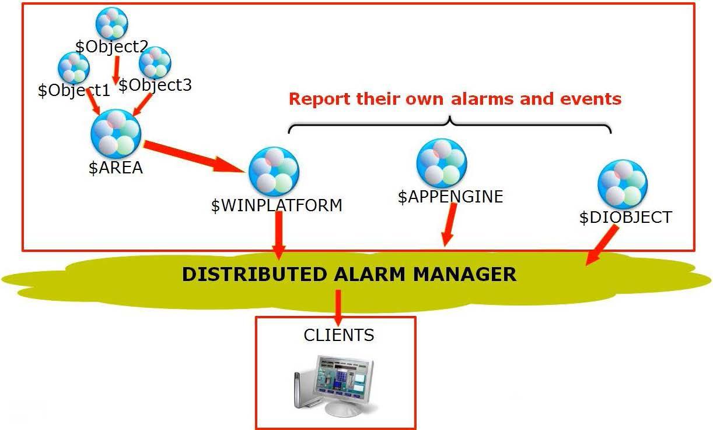
Figure 23-1: The Platform acts as a single Alarm Provider, routing all alarms and events from subscribed Areas to the Distributed Alarm infrastructure. Objects ($Object1, $Object2, $Object3) report to $AREA, which reports to $WINPLATFORM. The Platform routes to the Distributed Alarm Manager, which delivers to Clients. ($APPENGINE and $DIOBJECT also report their own alarms and events.) (page 7-4)
A Platform acts as a single Alarm Provider that provides alarms to the Distributed Alarm subsystem. A Boolean checkbox in the Platform AutomationObject indicates whether it is subscribed to Areas for alarm/event reporting.
The Platform's responsibilities:
Routes all alarms/events for subscribed Areas to the distributed alarming infrastructure
Acts as a router between Alarm/Event Notification Distributors (inside Areas, Platforms, Engines, DI Devices) and the distributed infrastructure
Routes alarm acknowledgments, enables, and disables back to the appropriate AutomationObject
Acknowledgments, enables, and disables carry User information for security purposes
23.3 Event Handling — Platform as Event Provider
Page 7-5
A Platform also acts as an Event Provider that provides events to the InTouch Distributed Alarm subsystem. This provider routes all events generated by AutomationObjects hosted by that Platform to Application Server. The provider acts as a router between the NotificationDistributor (inside every Area, Platform, Engine, etc.) and the InTouch Distributed Alarm subsystem.
Key difference: Unlike the Alarm Provider, the Event Provider does not need to deal with subscriptions to Areas.
23.4 Types of Alarms
Pages 7-5 to 7-8
Application Server supports five types of alarms. The alarm type that can be configured depends on the data type of the attribute's value.
Alarm Type
Description
Data Type
Limit
Threshold-based; triggers when value crosses predefined limits (LoLo, Lo, Hi, HiHi)
Float, Integer, Double
Deviation
Compares value to a target; triggers when deviation exceeds minor/major limits
Float, Integer, Double
Rate of Change (ROC)
Identifies when a value changes too quickly over time (calculated slope)
Float, Integer, Double
Bad Value
Triggers when an attribute returns a "bad quality" value
Any
Diagnostic
System-level diagnostic alarm
Various
23.4.1 Limit Alarms
Page 7-5
A limit alarm compares the current value to one or more predetermined alarm limits within the attribute's full range of values. If the value exceeds a limit, an alarm occurs. You can individually select and configure values and priorities for LoLo, Lo, Hi, and HiHi alarm limits, and set individual messages for each.
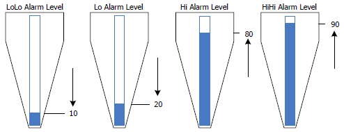
Figure 23-2: Limit alarm levels visualized on tank silhouettes — LoLo (10), Lo (20), Hi (80), and HiHi (90). The blue zones show value ranges that trigger respective alarms. (page 7-5)
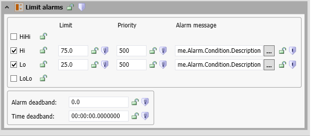
Figure 23-3: Limit Alarms configuration panel in the IDE. Hi and Lo are enabled with priority 500 and limit values of 75.0 and 25.0 respectively. HiHi and LoLo are unchecked (inactive). Alarm deadband and time deadband are set to 0. (page 7-5)
23.4.2 Alarm Deadband and Time Deadband
Page 7-6
Alarm Deadband: An engineering-units threshold that must be crossed to reset an active alarm. For example, if the HiHi limit is 80 and the deadband is 5, the value must drop below 75 to reset the alarm.
Time Deadband: The length of time an attribute value must continuously remain in an alarm (or unalarmed) condition before the alarm CONDITION Boolean is updated. This prevents rapid alarm chatter.
Timestamps use the most current input value timestamp. If no timestamp is available, the AppEngine timestamp is used as a fallback.
23.4.3 Deviation Alarms
Page 7-6
A deviation alarm compares the current attribute value to a target EU value, then compares the absolute difference against configured minor/major deviation limits.
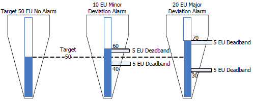
Figure 23-4: Deviation alarm concept — Left: Target 50 EU (No Alarm); Middle: 10 EU Minor Deviation at 60 EU with 5 EU deadband; Right: 20 EU Major Deviation at 70 EU with 5 EU deadband. (page 7-6)
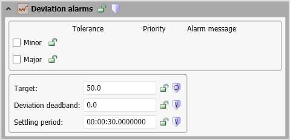
Figure 23-5: Deviation Alarms configuration dialog showing Target set to 50.0 EU, Deviation deadband of 0.0 EU, and Settling period of 30 seconds. Minor and Major alarm checkboxes are visible. (page 7-6)
The settling period is the time allowed for the attribute value to reach an expected target value after a device starts — no alarm can occur during this period.
23.4.4 Rate of Change (ROC) Alarms
Page 7-7
A rate of change alarm identifies when an attribute value is changing too quickly over time. The rate is calculated as the slope:
Slope = |Current Value − Previous Value| / Time Interval
Example: If a tank volume increases from 17 to 45 liters over 5 minutes, the slope is (45−17)/5 = 5.6 L/min. If the ROC limit is 5.0 L/min, an alarm triggers.
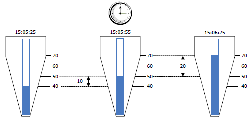
Figure 23-6: ROC alarm illustration — Three tank snapshots at 30-second intervals (15:05:25, 15:05:55, 15:06:25) show level rising from 40 → 50 → 70, demonstrating an accelerating fill rate. (page 7-7)
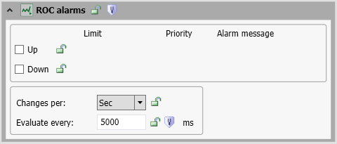
Figure 23-7: ROC Alarms configuration dialog with Up/Down directional limits, "Changes per: Sec" time unit, and "Evaluate every: 5000 ms" evaluation interval. (page 7-7)
23.4.5 Bad Value Alarms
Page 7-8
The Bad Value alarm triggers when an attribute returns a value determined to be of bad quality. This is useful for detecting data quality anomalies from I/O systems.
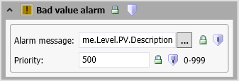
Figure 23-8: Bad Value alarm configuration dialog showing Alarm message set to me.Level.PV.Description and Priority of 500 (range 0–999). (page 7-8)
23.5 Plant State-Based Alarms
Pages 7-8 to 7-9
You can map alarm modes to plant operational states on a per-Galaxy basis to control how alarms are reported. Five plant states are pre-defined:
Plant State
Default Alarm State
Available Alarm States
Running
Enable
Enable (read-only — cannot change from Enable)
Maintenance
Disable
Enable / Disable / Silence
Startup
Silence
Enable / Disable / Silence
Shutdown
Disable
Enable / Disable / Silence
Testing
Silence
Enable / Disable / Silence
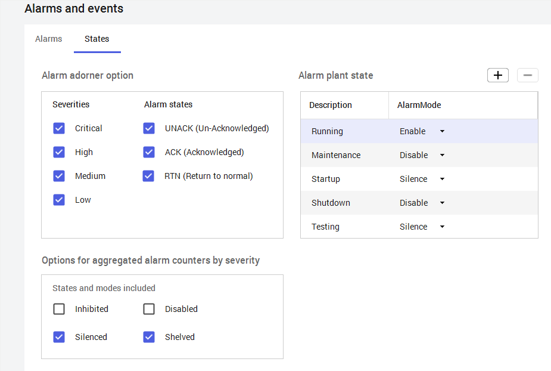
Figure 23-9: Alarms and Events configuration window, States tab. Shows alarm severities (Critical/High/Medium/Low), alarm states (UNACK/ACK/RTN), plant states with their AlarmMode settings, and options for aggregated alarm counters by severity. (page 7-8)
Operating Rules for Plant States:
You can define new plant states, rename them, or remove them — except the "Running" state
The "Running" state can be renamed, but its alarm state is read-only and cannot be changed from Enable
After configuring plant states in the Galaxy, assign them to Area objects via the PlantState attribute
The PlantAlarmMode attribute auto-updates to match the PlantState's alarm state
23.6 Enabling, Silencing, and Disabling Alarms
Pages 7-9 to 7-10
Alarms can be enabled, disabled, or silenced at runtime. This can be applied at the Area level, container Object level, individual Object, or individual alarm level within an Object.
Alarm States (from most permissive to most restrictive)
State
Behavior
Enabled
All alarms are reported to clients and saved as historical data. Most permissive state. Requires AlarmModeCmd and AlarmInhibit enabled for the Object, its container, and its area.
Silenced
Alarms are detected, saved to history, and sent to clients — but clients do not display them. More restrictive than Enabled, less than Disabled.
Disabled
No alarms are detected. Alarms stay "Return to Normal" until re-enabled. Most restrictive state; no acknowledgment required.
Hierarchy behavior:
When an Object's alarms are silenced, all individual enabled/silenced alarms are forced to silenced. Individual alarms can still be disabled.
When an Object's alarms are disabled, all individual alarms are forced to disabled.
Inhibiting an individual alarm (when Object is enabled or silenced) forces that individual alarm to disabled.
Setting Alarm State with Object Attributes
Pages 7-9 to 7-10
Four core attributes control alarm mode and report status:
Attribute
Type
Description
AlarmModeCmd
Writeable
Sets the commanded alarm mode (Enable/Silence/Disable). Set via script, UI, or input extension.
AlarmInhibit
Writeable
"Kill switch" — when TRUE, disables ALL alarms for the Object and all contained objects immediately. When FALSE, inhibition is removed.
AlarmMode
Calculated
Derived from AlarmModeCmd, AlarmInhibit, and the parent Object's AlarmMode. Always resolves to the most restrictive setting.
_AlarmModeEnum
System
Enum representation of the alarm mode.
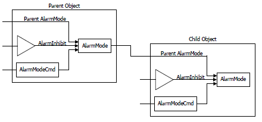
Figure 23-10: Parent-Child alarm mode hierarchy diagram. The Parent Object's AlarmMode (calculated from AlarmModeCmd and AlarmInhibit) is passed as input to the Child Object, which combines it with its own AlarmModeCmd and AlarmInhibit to determine the Child's AlarmMode. (page 7-10)
Important hierarchy rules:
The system always resolves to the most restrictive setting at every level
Object-level mode applies to all individual alarms within that Object
Each individual alarm is autonomous — changing one does not affect others
Inhibiting an individual alarm does not affect contained objects; inhibiting the Object affects everything beneath it
23.7 Alarm Attributes Reference
Page 7-11
Each alarm type exposes a set of built-in attributes for managing alarm state, acknowledgment, and timestamps:
Attribute
Description
<Attribute>.Acked
Boolean — TRUE when acknowledged. Resets to FALSE on new alarm (InAlarm changes from FALSE to TRUE).
<Attribute>.AckMsg
String — Operator comment at acknowledgment. Sets Acked=TRUE and TimeAlarmAcked. Max 256 characters.
Alarm description (InternationalizedString, max 329 chars). Can use me.AttrName reference. Falls back to Object's ShortDesc.
<Attribute>.InAlarm
Alarm state. Forced Off when disabled; quality follows host primitive (GOOD when disabled).
<Attribute>.Inhibit
If TRUE, disables this single alarm only. Does not affect other alarms.
<Attribute>.Priority
Urgency value: 1–999 (1 = most urgent).
<Attribute>.TimeAlarmAcked
Timestamp of last acknowledgment.
<Attribute>.TimeAlarmOff
Timestamp when alarm cleared (InAlarm went off).
<Attribute>.TimeAlarmOn
Timestamp when alarm triggered (InAlarm went on).
23.8 Alarm Severities and Runtime Ranking
Page 7-12
Alarm Severities are rankings with descriptive labels that can be mapped to customizable priority ranges at the Galaxy level:
Severity
Description
Default Priority Range
1
Critical
1 – 250
2
High
251 – 500
3
Medium
501 – 750
4
Low
751 – 999
Figure 23-11: Alarms and Events configuration, Alarms tab. Shows severity levels 1–4 with Shelve/Historize checkboxes, priority ranges, and severity icons. Also shows Alarm Modes (Inhibited/Disabled, Silenced, Shelved) and Event types (System, Application, User) with historization enabled. (page 7-12)
Runtime Ranking Rules
The most urgent alarm has the lowest severity number, but additional criteria determine runtime ranking:
Criteria
More Urgent
Less Urgent
Alarm Mode
Enabled
Silenced
InAlarm
TRUE (InAlarm)
FALSE (normal)
Acked
FALSE (unacked)
TRUE (acked)
Severity Level
1 (Critical)
4 (Low)
23.9 Alarm Aggregation
Pages 7-13 to 7-15
Alarm aggregation provides an efficient way to identify whether any alarms on an Object are currently in the InAlarm state, the overall status of the most important alarm, and how many alarms are active at each severity and containment level.
Aggregated Alarm States
State
Aggregated?
Description
UNACK_ALM
✅ Yes
Unacknowledged and in alarm
ACK_ALM
✅ Yes
Acknowledged but still in alarm
UNACK_RTN
✅ Yes
Unacknowledged and returned to normal
ACK_RTN
❌ No
Acknowledged and returned to normal (not aggregated)
Note: Silenced alarms are still aggregated, even though they do not appear in runtime clients.
Aggregation Levels
Attribute: Aggregation on a specific attribute (analog attributes only).
Object: Aggregation of all alarms on the Object, all contained objects, and their descendants. Child object values are added to parent values.
Area: Aggregation of alarms on the Area itself, all objects assigned to it, and all sub-Areas. If the Area's AlarmMode is silenced, all alarms in the Area are silenced.
Five Aggregation Attributes
Attribute
Description
Runtime
AlarmCntsBySeverity
Array of alarm counts in UNACK_ALM, ACK_ALM, or UNACK_RTN states, aggregated by severity levels 1–4.
Read-Only
AlarmMostUrgentAcked
TRUE (default) when no alarms are InAlarm or waiting to be acked, OR the most urgent alarm(s) have been acknowledged.
Read-Only
AlarmMostUrgentInAlarm
FALSE (default) when no alarms are InAlarm or waiting to be acked. TRUE when the most urgent alarm(s) are InAlarm.
Read-Only
AlarmMostUrgentMode
The AlarmMode of the most urgent alarm(s). Defaults to Object's AlarmMode when no alarms active.
Read-Only
AlarmMostUrgentSeverity
Severity 1–4 of the most urgent alarm(s). Returns 0 when no alarms active.
Read-Only
Configuring Alarm State Aggregation
Page 7-15
To enable aggregation, check the Aggregate Alarms checkbox on the Area Object editor. This sets the AlarmAggregationStateCmd attribute to True.
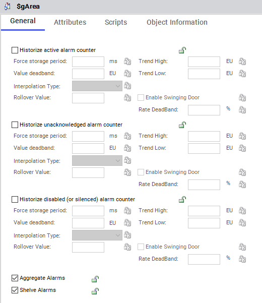
Figure 23-12: SgArea Editor, General tab. The Aggregate Alarms checkbox (checked) and Shelve Alarms checkbox (checked) are visible at the bottom. Three historization sections are available for Active, Unacknowledged, and Disabled/Silenced alarm counters. (page 7-15)
Monitoring Aggregated Alarm State at Runtime
Page 7-16
Figure 23-13: Object Viewer showing runtime alarm state information. The table displays AttributeReference, Value, Timestamp, Quality, and Status columns. Navigation tabs include Platforms, AppEngine, Simulator, Mixer100, ProdPLC, Alarms, and more. (page 7-16)
23.10 Shelving Alarms
Pages 7-17 to 7-18
Shelving allows you to temporarily hide alarms from displays for a fixed period of time. Alarms continue to be historized even when shelved.
How Shelving Differs from Silencing:
Shelved alarms have a built-in timeout — they are automatically unshelved when the period expires
Shelving applies only to individual alarms, not entire Areas or Objects
The system enforces role-based limitations on permission to shelve, severity levels that can be shelved, and total number of shelved alarms per user
The system tracks who shelved the alarm, from what workstation, the reason, start time, and expiration
Seven Shelving Attributes
Attribute
Access
Description
AlarmShelveCmd
Writeable
Command to shelve or unshelve. Default: Duration=0, Reason=""
AlarmShelved
Read-Only
Boolean: TRUE if shelved, FALSE if unshelved.
AlarmShelveStartTime
Read-Only
Date/time when shelving began.
AlarmShelveStopTime
Read-Only
Start time + duration.
AlarmShelveReason
Read-Only
Reason string for shelving.
AlarmShelveUser
Read-Only
Name of user who shelved/unshelved.
AlarmShelveNode
Read-Only
Computer node from which shelving occurred.
Enabling and Shelving Alarms at Runtime
Page 7-18
Figure 23-14: Alarm shelving configuration (top) and Object Viewer shelving interface (bottom). The Alarms tab shows Shelve checkboxes enabled for Medium and Low severity. Object Viewer navigates to Mixer100.Alarm.Condition.AlarmShelveCmd with a Modify String Value dialog for editing the shelving command. (page 7-18)
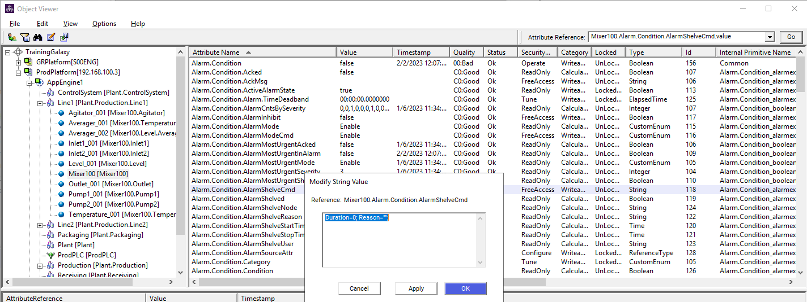
Figure 23-15: Object Viewer showing the full alarm attribute list for Mixer100, including Alarm.Condition.Acked, AlarmMode, AlarmShelveCmd, and more. The Modify String Value dialog shows the AlarmShelveCmd value format: Duration=0; Reason=*. (page 7-18)
23.11 Alarm Historization
Pages 7-19 to 7-22
Default Alarm Severity to Priority Mapping
Severity
Description
Shelve
Historize
Priority Range
1
Critical
No
Yes
1 – 250
2
High
No
Yes
251 – 500
3
Medium
Yes
Yes
501 – 750
4
Low
Yes
Yes
751 – 999
Note: Mapped alarm severities are not shared across galaxies in a multi-Galaxy environment. Each Galaxy has its own priority-to-severity mapping.
Saving Alarms and Events as Historical Data
Page 7-20
Alarms and events detected at runtime are saved as historical data to the Historian for the host engine. Alarm-related events such as Acknowledge are also saved. These can be viewed in AVEVA Historian Client Web.
Alarm configuration can be added to templates or instances on the Attributes tab for Boolean, Float, Integer, and Double data types. For Boolean attributes, you can select either a Bad value alarm or a State alarm with the following categories:
Figure 23-16: State alarm configuration dialog with expanded Category dropdown showing all available categories (Discrete, Value LoLo through HiHi, Deviation, ROC, SPC, Process, System, Batch, Software). Priority defaults to 500 (range 0–999). (page 7-20)
Configuring Alarm Historization
Page 7-21
What alarms and events are historized to Historian is configured in the Alarms and Events dialog box. You can also configure Area Objects to save alarm state counts as historical data:
Active alarms
Unacknowledged alarms
Disabled or silenced alarms
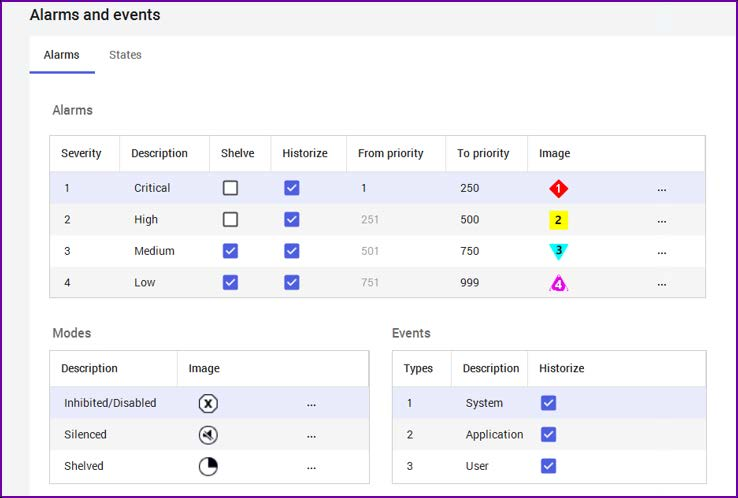
Figure 23-17: Alarms and Events dialog, Alarms tab. Shows Historize checkboxes (all checked) for all severity levels. Below: Alarm Modes (Inhibited/Disabled, Silenced, Shelved) and Event types (System, Application, User) — all with historization enabled. (page 7-21)
Viewing Alarm and Event Trends
Page 7-22
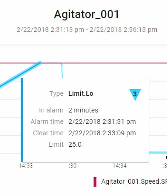
Figure 23-18: Alarm trend pop-up for Agitator_001 showing a Limit.Lo (Low Limit) alarm. The alarm triggered at 2:31:31 pm, cleared at 2:33:09 pm (2-minute duration), with a limit of 25.0. The blue line shows Agitator_001.Speed.SP with a red horizontal alarm threshold line. (page 7-22)
Figure 23-19: Event trend pop-up showing a "Verified Write" event for a Speed setpoint change. The write was performed by John Johnson (Lkf\johnj) and verified by James Smith (LKF\jamess). The purple marker on the trend line indicates the event point. (page 7-22)
Quiz: Alarms and Events Overview
Test Your Knowledge
Q1: What is the key difference between an alarm and an event in Application Server?
Click to reveal answer
An event is a general occurrence of a condition at a specific time (state changes, not inherently abnormal). An alarm is a special type of event that represents an abnormal condition requiring immediate user attention. Alarms are handled in a special real-time manner with dedicated clients for viewing.
Q2: Name the five types of alarms supported by Application Server.
Click to reveal answer
Limit, Deviation, Diagnostic, Rate of Change (ROC), and Bad Value alarms.
Q3: A HiHi alarm limit is set to 80 with an alarm deadband of 5 EU. At what value must the process variable drop to clear the alarm?
Click to reveal answer
The value must drop below 75 EU (80 − 5 = 75) to clear the HiHi alarm.
Q4: What are the three alarm states, from most permissive to most restrictive?
Q5: What happens when the AlarmInhibit attribute is set to TRUE?
Click to reveal answer
ALL alarms for the Object and all contained objects are disabled immediately. When set back to FALSE, inhibition is removed and the system checks AlarmMode and parent status to determine the alarm state.
Q6: Which alarm states are aggregated, and which is NOT?
Click to reveal answer
UNACK_ALM, ACK_ALM, and UNACK_RTN are aggregated. ACK_RTN is NOT aggregated.
Q7: What is the default alarm state for the "Running" plant state, and can it be changed?
Click to reveal answer
The Running state defaults to Enable and its alarm state is read-only — it cannot be changed from Enable. The state name can be renamed, but the alarm mode cannot be modified.
Q8: How does shelving differ from silencing an alarm?
Click to reveal answer
Key differences: (1) Shelved alarms have a built-in timeout and are auto-unshelved when expired; (2) Shelving applies only to individual alarms, not entire Areas or Objects; (3) Role-based access controls limit who can shelve; (4) The system tracks the user, workstation, reason, start time, and expiration of shelving.
Q9: What are the default priority ranges for each alarm severity?
Click to reveal answer
Critical (1): 1–250, High (2): 251–500, Medium (3): 501–750, Low (4): 751–999.
Q10: When viewing alarm trends in Historian Client Web, how can you identify an alarm vs. an event on the trend line?
Click to reveal answer
Alarms display with highlighted areas on the trend line — clicking the highlight shows alarm details (type, duration, limit). Events display with event icons (e.g., a purple + marker) — clicking the icon shows event details (type, user, verification).
Source: AVEVA Application Server 2023 Training Manual, Module 7 Section 1